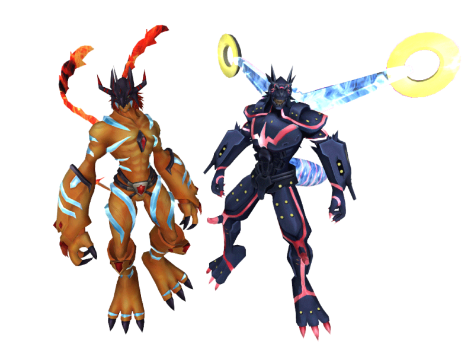

Digimon Galaxy Wiki
Bem-vindo à Wiki DGO Brasil!
Aqui você encontrará...
Área do Novato
Banco de Dados de Digimons
Esta aba agora redireciona diretamente para a página oficial dos Digimons.
Abrir página de Digimons
Guias de Missões
Conteúdo em breve
O conteúdo será inserido em breve.
Dungeons
Mapas
Confira os mapas...
- DATS Center
- D-Terminal
- File Island
- Odaiba
Sistemas
Aqui você encontra...
NPCs & Lojas
Lista de NPCs...
- Dorumon - Craft de itens especiais
- Shoutmon - Evoluções e recompensas
- Andromon - Acesso a Dungeons
Eventos



Eventos do Digital Galaxy
Selecione um evento para ver todos os detalhes.
Change-log
Atualizações publicadas no canal oficial do Discord.
Carregando atualizações...
Olá, Tamer! Eu sou Gracenovamon seu guia inicial. Escolha uma opção abaixo para receber uma dica rápida.